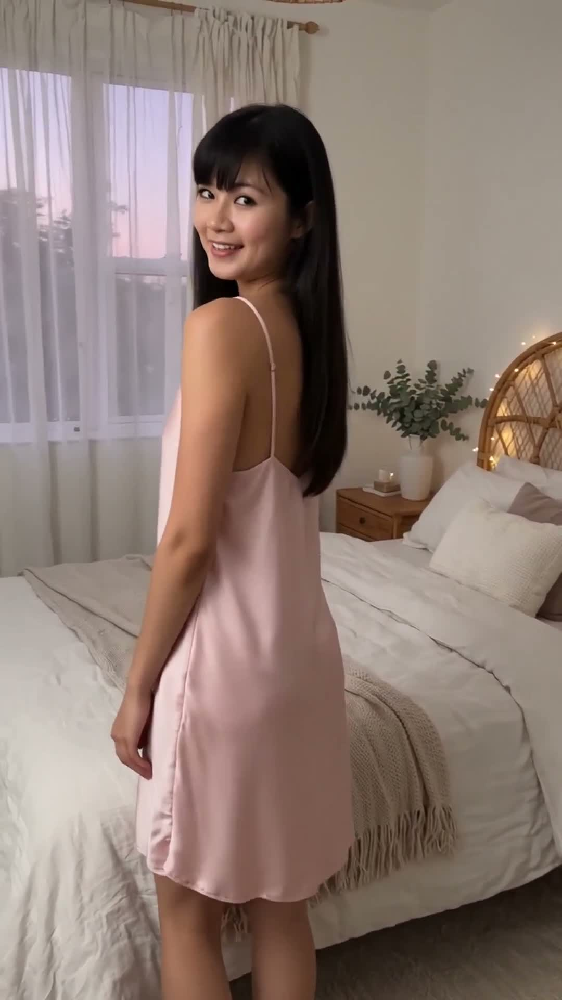
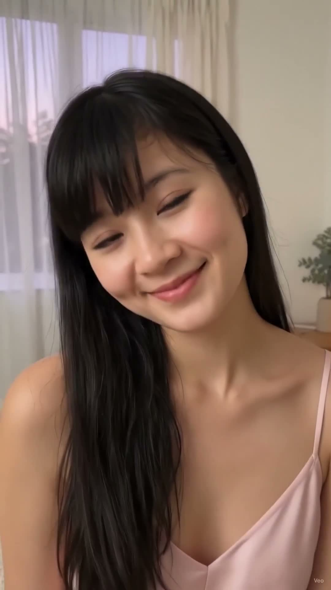

Váy ngủ lụa 2 dây hồng pastel: mềm mát như không mặc, ngủ ngon hơn hẳn
Tối nay Lisa mặc váy ngủ lụa hai dây đi ngủ đây: váy ngủ lụa satin 2 dây hồng pastel, mặt trước trơn không nút, dây mảnh, cổ chữ V, dài tới gối. Lụa hồng pastel mềm mát, mặc lên nhẹ như không mặc vậy, ngủ ngon hơn hẳn.
Đọc trước khi mua: bài viết này là gợi ý phối đồ lấy cảm hứng từ mẫu váy ngủ lụa satin 2 dây đang gắn nhãn "Bán chạy nhất" trên TikTok Shop, nằm trong top 10 mẫu đồ ngủ bán chạy trên sàn thương mại điện tử Việt năm 2026. Lisa là nhân vật AI, nên bài viết không phải bài đánh giá sản phẩm Lisa đã mặc thật hay đã dùng thử. Giá, chất liệu và size cần kiểm tra lại trên trang bán trước khi mua. Link mua hàng: [CHƯA GẮN LINK] — sẽ cập nhật khi Lisa Style đủ điều kiện gắn link affiliate.
Nhìn chiếc váy từ nhiều góc
Cùng một chiếc váy lụa hồng pastel, nhìn lúc đứng xoay, lúc ngồi mép giường và lúc cười duyên sẽ khác nhau — xem đủ 3 góc rồi hãy quyết có hợp với bạn không:

Xoay khoe váy — lụa suông, dài tới gốiNgồi mép giường — dây mảnh, cổ V

Cười duyên — hồng pastel dịu, không chói
Vì sao váy ngủ lụa 2 dây hồng pastel hợp đi ngủ?
Lụa satin mềm mát, nhẹ như không mặc: lụa trượt trên da, không dính người khi trở mình; đêm nóng mặc lụa mát hơn cotton dày, ngủ sâu hơn, sáng dậy không bị hầm lưng.
Hồng pastel dịu, không chói: hồng pastel nhạt hơn hồng phấn, nhìn dịu mắt dưới đèn ngủ vàng; hợp cả phòng ngủ trắng lẫn phòng ngủ gỗ ấm, chụp ảnh lên cũng không bị chói da.
2 dây mảnh, cổ V, thoáng vai và cổ: vai và cổ được thoáng hoàn toàn, không bị dây to cấn vai; cổ V kéo dài phần cổ, nhìn gọn gàng mà vẫn kín đáo, đúng chuẩn đồ ngủ mặc ở nhà.
Mặt trước trơn, không nút: không có cúc hay khóa chạm vào da khi nằm nghiêng; váy suông dài tới gối, lật người không bị xoắn váy, không cần chỉnh lại giữa đêm.
Cách chọn váy ngủ lụa 2 dây cho vừa người
Chọn đúng độ dài tới gối: váy tới gối là vừa nhất để ngủ — ngắn hơn dễ tốc lên khi nằm, dài hơn dễ vướng chân khi dậy đi vệ sinh ban đêm; thử ngồi xuống xem váy có bị kéo lên quá cao không.
Dây mảnh thì cần quai điều chỉnh được: dây mảnh đẹp nhưng dễ tuột nếu không chỉnh được độ dài; chọn loại có khóa điều chỉnh ở dây, chỉnh sao cho cổ V nằm đúng chỗ, không quá trễ cũng không kéo vai lên.
Thử lụa dưới đèn vàng: lụa satin bóng nhẹ, dưới đèn trắng có thể bóng quá mức; thử dưới đèn ngủ vàng trong phòng ngủ là thấy đúng màu hồng pastel khi mặc thật, không bị lệch tông.
Mặc kèm áo choàng mỏng khi ra khỏi phòng: váy 2 dây hợp trong phòng ngủ, nhưng ra phòng khách hay mở cửa nhận đồ thì nên khoác thêm áo choàng lụa mỏng cùng tông — vừa kín đáo vừa giữ được vẻ sang của lụa.
Outfit này hợp với ai?
Người hay nóng khi ngủ: lụa satin mát, thoáng, không bí; đêm nóng mặc váy 2 dây ngủ ngon hơn hẳn pijama dài tay hay váy cotton dày.
Người thích đồ ngủ nữ tính mà vẫn kín đáo: 2 dây mảnh + cổ V + dài tới gối là vừa đủ nữ tính, không hở quá, mặc ở nhà thoải mái, gặp người nhà cũng không ngại.
Người da sáng và da trung bình: hồng pastel làm da sáng đều màu hơn, nhìn mặt tươi hơn buổi sáng; da trung bình mặc hồng pastel cũng không bị xỉn da như mặc hồng đậm.
Ai nên cân nhắc trước khi chọn?
Người ngủ hay lăn lộn: lụa trơn trượt, váy suông có thể xô lệch khi lăn nhiều; nếu ngủ hay trở mình mạnh, nên chọn váy có độ suông vừa, không quá rộng, hoặc mặc kèm quần short lụa mỏng bên trong.
Người vai nhỏ, dễ tuột dây: dây mảnh trên vai nhỏ dễ tuột khi nằm nghiêng; nên chọn loại dây có khóa điều chỉnh, hoặc khâu thêm một đường cố định nhỏ ở vai nếu cần.
Người không thích cảm giác bóng của lụa: lụa satin có độ bóng nhẹ; nếu thích cảm giác lì, mát kiểu cotton, có thể chọn váy ngủ cotton lụa hoặc lụa tơ tằm mờ thay vì satin bóng.
Người da ngăm: hồng pastel trên da ngăm có thể kém nổi hơn trên da sáng; nên thử dưới đèn vàng và phối áo choàng trắng kem để cân bằng, tránh mặc hồng pastel với ga giường hồng đậm sẽ làm da tối đi.
Mẹo nhỏ để mặc váy ngủ lụa vừa đẹp vừa bền
Giặt tay với nước lạnh: lụa sợ nước nóng và giặt máy mạnh; giặt tay nhẹ với nước lạnh, không vắt xoắn, váy giữ được độ bóng và không bị nhăn cứng.
Phơi trong bóng râm, tránh nắng gắt: nắng gắt làm lụa bạc màu và khô giòn; phơi chỗ thoáng gió, lộn trái, váy hồng pastel bền màu nhất.
Ủi ở nhiệt độ thấp, lót vải mỏng: lụa nhăn nhẹ sau khi giặt là bình thường; ủi mặt trái ở nhiệt độ thấp, lót một lớp vải cotton mỏng lên trên để không làm cháy bóng lụa.
Cất váy riêng, tránh móc nhọn: dây mảnh dễ móc vào đồ khác trong tủ; treo váy bằng móc bọc vải, cất riêng một ngăn để dây không bị kéo giãn hay xước lụa.
Lưu lại công thức này: váy ngủ lụa 2 dây hồng pastel + áo choàng lụa mỏng cùng tông — tối nào cũng ngủ ngon mà sáng dậy vẫn xinh.
Xem video này
Lisa đã lên đồ váy ngủ lụa 2 dây hồng pastel này trong video tối nay — xem Lisa xoay khoe váy và ngồi mép giường cười duyên:
Video tối nay lên sóng lúc 21:00. Các link trên là link kênh/trang — mở kênh là thấy video khi lên sóng. Link Reel Instagram sẽ được cập nhật sau khi video lên sóng.
Câu hỏi thường gặp
Váy lụa 2 dây có mát thật không?
Có — lụa satin thoáng khí, trượt trên da, không dính người khi đổ mồ hôi nhẹ; đêm nóng mặc lụa mát hơn hẳn cotton dày hay pijama dài tay. Chỉ cần tránh lụa pha nilon nhiều, vì loại đó bí và nóng hơn lụa thật.
Dây mảnh có dễ tuột khi ngủ không?
Có thể, nhất là với người vai nhỏ hay nằm nghiêng nhiều. Chọn loại dây có khóa điều chỉnh, chỉnh vừa vai trước khi ngủ; nếu vẫn tuột, khâu thêm một đường cố định nhỏ ở vai là xong.
Hồng pastel có kén da không?
Hồng pastel hợp nhất với da sáng và da trung bình; da ngăm vẫn mặc được nhưng nên thử dưới đèn vàng và phối áo choàng trắng kem để da không bị tối đi.
Lisa đã mặc thật chiếc váy này chưa?
Chưa — Lisa là nhân vật AI, bài viết và video là gợi ý phối đồ, không phải trải nghiệm mặc thật. Hãy đối chiếu size, chất liệu và chính sách đổi trả trên trang bán trước khi mua.
Link affiliate: bài viết này hiện chưa gắn link mua hàng. Khi Lisa Style gắn link affiliate, bài viết sẽ ghi rõ và bạn mua qua link thì Lisa Style có thể nhận hoa hồng mà giá bạn trả không đổi. [CHƯA GẮN LINK]